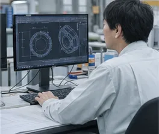
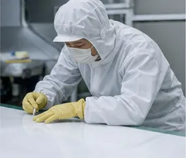

ライニング施工スタッフ倉敷本社工場
- 仕事内容
- タンクや配管の内面にフッ素樹脂シートを貼る仕事です。下地処理、シートの裁断・接着、継ぎ目の溶接、検査までを、先輩と組んで覚えていきます
- 応募資格
- 学歴・経験は問いません。普通自動車免許（AT限定可）
- 給与
- 月給 21万円〜30万円（経験・年齢を考慮して決定）
- 勤務時間
- 8:00〜17:00（休憩60分）
Interview
それぞれの持ち場で働く3人に、仕事のことを聞きました。
施工課2019年入社 T.M.
前職は飲食店でした。最初はシートを真っすぐ切ることさえ難しかったのですが、先輩が毎日同じ手順で見せてくれたおかげで、3年目には継ぎ目の溶接を任されるようになりました。検査で1か所も反応が出なかった日は、いまでも少しうれしいです。
施工管理2008年入社 K.S.
お客様の構内で施工するときは、設備を止められる日数が決まっています。その中に下地処理から検査までを収めるのが私の仕事です。天気や前工程の遅れで計画が動くことも多いので、毎朝の打ち合わせで全員と状況をそろえるようにしています。

技術営業2016年入社 A.N.
「最近このタンクの底がふくれる」といった相談を受けて、原因の見当をつけ、材料と施工方法を提案します。工場のことも現場のことも知っていないと答えられないので、今も施工の現場にはよく顔を出しています。
Data
創業
1974年従業員数
96名平均年齢
38.4歳平均勤続年数
12.6年年間休日
121日有給休暇の平均取得日数
12.8日経験なしで入社した社員
7割事業所
3か所2026年4月時点の社内の数字です。
A Day
ライニング施工スタッフの、本社工場での1日です。

その日の作業と注意点を班ごとに確認します。
シートや接着剤、工具をそろえ、設備の内部の換気を確かめます。
型紙に合わせてシートを切り、下地に貼り込みます。
食堂でお弁当を食べる人が多いです。
熱風で継ぎ目を接合します。温度と速さは決めた値で。
その日の施工範囲を確かめ、数値と写真を記録に残します。
翌日の段取りを班長と確認して、17:00に終業です。
Requirements
中途採用は通年で受け付けています。新卒採用（2027年4月入社）の会社説明会の日程は、お問い合わせください。
応募・ご質問は、お問い合わせフォームの「採用について」からご連絡ください。
工場見学だけのご希望も歓迎しています。